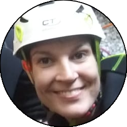

Relazione
| Data Uscita | 18-06-2023, Domenica | Area | Corni di Canzo |
|---|---|---|---|
| Luogo di Partenza | Via Ziniga - Valbrona (CO) | Quota |
650m (circa) la partenza 620m (circa) l'entrata della forra 200m l'uscita nel lago |
| Dislivello | 50m (circa) | Tempi | 05:30 ore (05:00 ore la forra) |
| Esposizione | Nord | Difficoltà Tecnica | V3A2 |
| Vie di Fuga | Circa a metà sulla sinistra nel bosco (freccia su sasso), sennò in basso al vascone artificiale sulla destra. | Bacino Pluviale, Prese d'Acqua o Condotte | 2km², presa d'acqua nei pressi del vascone. |
| Partecipanti |
 Elena,
Gio,
 Henry, Henry,
 Oracolo, Oracolo,
 Walterone Walterone
|
||
(clicca sull'immagine per scarica la traccia GPS)
Accesso
Da Lecco passare il Ponte nuovo e seguire la strada verso Bellagio, fino a uscire dalla seconda galleria dove si parcheggia nei pochi posti accanto al Motel Nautilus (uscita a valle). Con la navetta salire invece fino a Onno, dove si prende per Valbrona e all'ingresso del paese a sinistra seguendo la strada per il rifugio SEV. Superare un paio di tornanti e nei pressi di una larga curva parte l'avvicinamento sulla sinistra su strada carrareccia, parcheggiare poco dopo nei prati sulla sinistra. L'avvicinamento senza navetta sarebbe estremamente lungo, perchè non ci sono sentieri comodi che permettono di tagliare più direttamente dal lago.
Avvicinamento
Seguire la strada carrareccia inizialmente comoda che si inoltra verso la valle delle Moregge. Ignorare a un primo bivio la deviazione a sinistra in discesa (porta a delle abitazioni private) mentre poco dopo superato un canaletto al bivio presso un albero prendere la traccia di sinistra, e seguirla su terreno sempre più aperto e a tratti anche leggermente esposto (fare attenzione), sempre tra i paglioni. Nell'ultima parte il sentiero si confonde un po' (seguire la traccia GPS o guardare bene dove si sta andando), ma se si fa giusto si arriva nel fiume in un punto molto comodo dove è possibile prepararsi alla discesa.
Discesa
La discesa è una lunga serie di calate e disarrampicatine purtroppo senza tuffi rilevanti. Nella prima parte si sussegono diverse calate, tra cui anche le più alte, su roccia sempre abbastanza scivolosa, con qualche facile mancorrente. Superata questa parte si trova un tratto piano abbastanza aperto dove si cammina.
La seconda parte inizia a inforrarsi di più, la portata aumenta, e c'è anche qualche bella pozza le calate più alte non son mai tuffabili. Si prosegue con belle verticali mai troppo lunghe e qualche disarrampicata a cui porre attenzione, in ambiente calcareo e scivoloso ma bello. In questa parte si incrocia anche la prima via di fuga, sulla sinistra (indicazione su sasso).
L'ultima parte è la più facile, anche se sempre molto scivolosa: si prosegue fino a un vascone artificiale, che si supera con attenzione con calata da albero o disarrampicando con attenzione su delle staffe vecchie nel muro. Si trova poi un salto che si scende sulla destra tramite catena e scaletta fissa, e una catena su terreno un po' liscio permette di scendere fino ad altri infissi artificiali, dove il ponticello sulla destra è la seconda via di fuga. Qui il canyon diventa abbastanza inforrato, e l'ultima serie di 4-5 calate (alcune molto scivolose, attenzione) portano all'uscita sotto la strada e accanto al motel Nautilus, uscendo direttamente nel lago (storicamente c'era una rete a cui passar sotto, ma che quest'anno non abbiamo trovato).
Ritorno
Uscire sulla spiaggetta di sinistra e risalire la scalinata dove inizia il bosco che porta direttamente al parcheggio dove si è lasciata la macchina a valle.